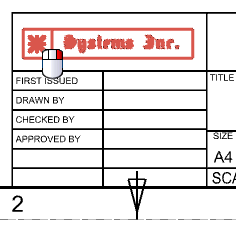
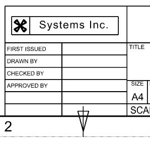
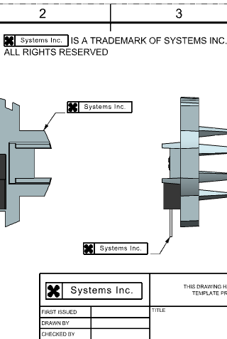

Replace the master symbol definition of a locked custom symbol
-
Right-click the custom symbol in the title block and choose Unlock Update.

-
Right-click the custom symbol in the title block again and choose Replace.
-
In the Symbol Instance group, clear the Replace All Instances of Selected Symbols
 check box.
check box.
-
In the Folder View group, expand the Custom Symbol Library node and select the Part Symbols folder.
-
In the Symbol View group, select the new_logo_label symbol and click OK.

-
(Optional) Replace the last locked custom symbol with the new label logo.

-
Close all parts.